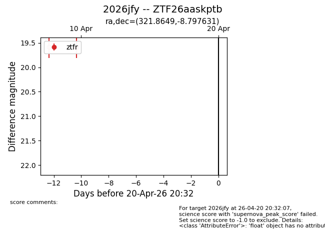
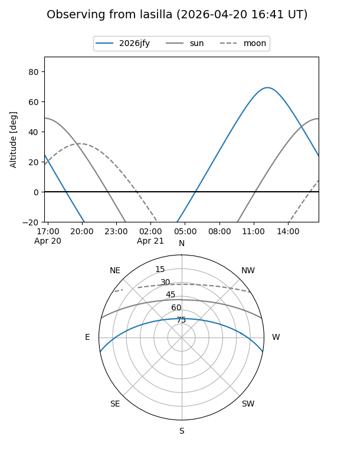
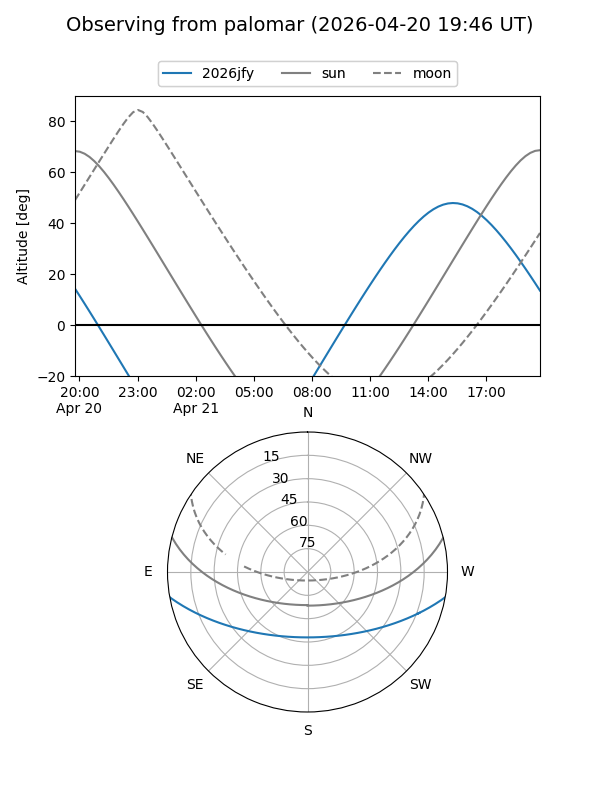

2026jfy
Target 2026jfy at 2026-04-20 20:42
Aliases and brokers:
FINK: link
Lasair: link
ALeRCE: link
TNS: link
YSE: link
alt names
ZTF26aaskptb (ztf,fink_ztf)
2026jfy (tns,yse)
Coordinates:
equatorial (ra, dec) = 321.8649,-8.79763
equatorial (HMS+DMS) = 21:27:27.57,-08:47:51.47
galactic (l, b) = (43.8042,-38.55774)
Flags:
Photometry:
last ztfr=19.59
1 ztfr detections
Lightcurve

Visibility


Additional plots